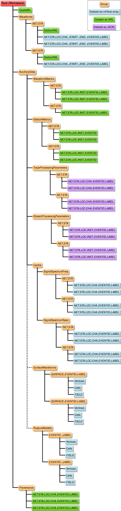

Workspace¶
We use the term “workspace” to refer to the HDF file that serves as a container to hold the inputs, important intermediate results, and outputs. It also includes provenance information describing the processing steps performed on the data.
The ASDF
HDF-5 layout includes specifications for earthquake information,
station metadata, and waveform time histories. We include information
not explicitly covered in the ASDF format specification in the
AuxiliaryData group.
Nomenclature¶
For many of the groups and datasets in the HDF file, we form the names
by concatenating station information, such as network code, station
code, location code, channel code, and event id. Additionally, ASDF
supports tags for differentiating Waveforms and AuxiliaryData. In
our extension of the ASDF layout, we create the tags based on the
station and event information along with a user-specified label. In
the following sections, we use the following variables (denoted by
italics) in the group and dataset names:
NET: FDSN network code (or equivalent);
STA: Station code;
LOC: Location code;
CHA: SEED channel code (or equivalent);
INST: First two letters of the channel code (dropping the third letter which corresponds to the component);
START__END: Channel start and end timestamps for
Waveforms;LABEL: User-specified label that uniquely identifies processing parameters; and
EVENTID: ComCat event id (or equivalent)
Extension of ASDF HDF-5 Layout¶
We add several additional groups to the AuxiliaryData section:
WaveformMetricsfor ground-motion intensity metrics, such as peak values, response spectra, and Fourier amplitude spectra.StationMetricsfor event station information, such as epicentral distance and rupture distance.TraceProcessingParametersfor parameters associated with the waveform trace processing.StreamProcessingParametersfor parameters associated with processing the channels for a station.Cachefor derived values that are not standard products and require significant processing to compute, such as noise and signal spectra, including smoothed signal spectra.(Potential future addition)
SurfaceWaveformsfor waveform time histories on a surface.(Potential future addition)
RuptureModelsfor finite-fault earthquake rupture models.

Waveform Metrics¶
Waveform metrics are quantities derived from the waveform time histories, such as peak values (maximum absolute values), duration, response spectra, and Fourier amplitude spectra. Although in some cases they may be associated with a single channel (for example, maximum absolute value) they are often a scalar value associated with multiple channels (for example, RotD50 from the channels with the horizontal components).
Waveform Metrics Hierarchy¶
Following the ASDF layout for waveforms and station metadata, the hierarchy is
WaveformMetrics (group) -> NET.STA (group)
-> NET.STA.LOC.INST_EVENTID_LABEL (dataset)
We use the instrument code (first two letters of the channel code) rather than the full channel code, because many metrics involve multiple channels (horizontal components). The components are included in the metrics as attributes as necessary.
The dataset is a byte string corresponding to XML, similar to the
QuakeML and StationXML datasets.
The XML hierarchy follows the ShakeMap convention of intensity metric
followed by intensity metric type (waveform_metrics -> IM -> IMT).
IM: Intensity metric (peak ground acceleration, peak ground velocity, response spectra, Fourier amplitude spectra)
IMT: Intensity metric type (maximum component, geometric mean, RotD50, etc)
Sample XML for a waveform metrics dataset:
<waveform_metrics>
<pga>
<rot_d50 units="m/s**2">0.45</rot_d50>
<maximum_component units="m/s**2">0.23</maximum_component>
<component name="east" units="m/s**2">0.23</component>
<component name="up" units="m/s**2">0.11</component>
</pga>
<sa percent_damping="5.0">
<rot_d50 units="g">
<value period="3.0">0.2</value>
<value period="1.0">0.6</value>
<value period="0.3">0.3</value>
</rot_d50>
</sa>
<pgv>
<maximum_component units="m/s">0.012</maximum_component>
<component name="east" units="m/s">0.012</component>
<component name="up" units="m/s">0.008</component>
</pgv>
</waveform_metrics>
Station Metrics¶
Station metrics are quantities that depend on the earthquake rupture and station, such as epicentral distance, hypocentral distance, Joyner-Boore distance, and closest distance to the rupture surface.
Station Metrics Hierarchy¶
Following the ASDF layout for waveforms and station metadata, the hierarchy is
StationMetrics (group) -> NET.STA (group)
-> NET.STA.LOC.INST_EVENTID (dataset)
The dataset is a byte string corresponding to XML, similar to the
QuakeML and StationXML datasets.
Sample XML for a station metrics dataset:
<station_metrics>
<hypocentral_distance units="km">10.2</hypocentral_distance>
<epicentral_distance units="km">2.3</epicentral_distance>
</station_metrics>
Trace Processing Parameters¶
Trace processing parameters are the parameters for the algorithms used to process the individual waveform traces. This information is primarily intended for reproducibility.
Trace Processing Parameters Hierarchy¶
Following the ASDF layout for waveforms, the hierarchy is
TraceProcessingParameters (group) -> NET.STA (group)
-> NET.STA.LOC.CHA_EVENTID_LABEL (dataset)
The dataset is a byte string corresponding to JSON.
Sample JSON for a trace processing parameters dataset:
{
"baseline": {
"polynomial_coefs": [
-3.1244715639196995e-24,
1.1046838180719736e-19,
-1.2610591147149431e-15,
4.223265643969671e-12,
7.099592013855652e-09,
0,
0
]
},
"corner_frequencies": {
"type": "snr",
"lowpass": 30.778610333622925,
"highpass": 0.008053637150713472
},
"snr_conf": {
"threshold": 3.0,
"min_freq": 1.5,
"bandwidth": 20.0,
"max_freq": 5.0
},
"signal_split": {
"picker_type": "travel_time",
"method": "p_arrival",
"split_time": "2019-07-06T03:20:46.346556Z"
},
"signal_end": {
"vsplit": 1.0,
"floor": 120,
"epsilon": 2.0,
"end_time": "2019-07-06T03:23:09.315515Z",
"model": "AS16",
"method": "model"
}
}
Stream Processing Parameters¶
Stream processing parameters are the parameters for the algorithms used in processing involving multiple channels for a station for a given earthquake. This information is primarily intended for reproducibility.
Stream Processing Parameters Hierarchy¶
Following the ASDF layout for waveforms, the hierarchy is
StreamProcessingParameters (group) -> NET.STA (group)
-> NET.STA.LOC.INST_EVENTID_LABEL (dataset)
The dataset is a byte string corresponding to JSON like the
TraceProcessingParameters.
Cache¶
The Cache includes intermediate results that are not readily
available or quickly reproduced from the waveform data, such as the
noise and signal spectra. The layout of this group may change and/or
the group may become obsolete (e.g., if the values are computed on
demand rather than stored).
The values that are stored in the Cache include:
SignalSpectrumFreqFrequency for the signal spectrum.SignalSpectrumSpecAmplitude of the signal spectrum.NoiseSpectrumFreqFrequency for the signal spectrum.NoiseSpectrumSpecAmplitude of the signal spectrum.SmoothSignalSpectrumFreqFrequency for the signal spectrum.SmoothSignalSpectrumSpecAmplitude of the signal spectrum.SmoothNoiseSpectrumFreqFrequency for the signal spectrum.SmoothNoiseSpectrumSpecAmplitude of the signal spectrum.SnrFreqFrequency for the signal-to-noise ratio.SnrSnrValue of the signal-to-noise ratio.
Cache Hierarchy¶
The hierarchy for all of the datasets is the same and is of the form:
Cache (group) -> SignalSpectrumFreq (group) -> NET.STA (group)
-> NET.STA.LOC.CHA_EVENTID_LABEL (dataset)
The dataset is a multidimensional float array.
Surface Waveforms (potential future addition)¶
Use case: Output from ground-motion simulations.
Status: Under discussion.
Output from seismic wave propagation simulations often include the waveform time histories on the ground surface or vertical slices. This auxiliary data group would provide a standard layout for specifying the topology of the surface and the time histories on that surface.
Rupture Models (potential future addition)¶
Use case: Finite-source rupture models from inversions of real earthquakes and scenario (hypothetical) earthquakes.
Status: Under discussion.
In order to compute station metrics associated with finite-source models, we need to have access to the finite-source models. Thus, it would be useful to include them in the ground-motion processing workspace. This would allow the provenance information to track updates to a finite-source model as well as alternative finite-source models for an earthquake.
Additionally, the earthquake rupture model is an important descriptive feature for scenario (hypothetical) earthquakes. Not only is it useful to have the finite-source description for computing station metrics, etc, but we often usually also have multiple realizations that differ in ways that are not easily described by basic parameters such as magnitude and hypocenter. Examples include variations in rupture speed and spatial variation in slip.